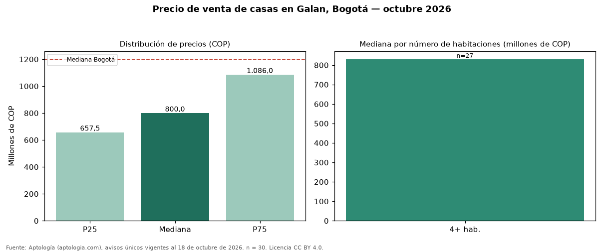

Precio de venta de casas en Galan, Bogotá — octubre 2026
En Galan (localidad de Puente Aranda), Bogotá, la mediana de precio de venta de casas es COP 800 millones, según 30 avisos únicos vigentes. Frente al total de Bogotá (COP 1,20 mil millones), el barrio está 33 % por debajo. Por metro cuadrado, la mediana es COP 3.192.537/m² (−32 % frente a COP 4.725.000/m² en Bogotá), puesto 104 de 110 barrios con muestra suficiente. El segmento con más oferta es el de 4 o más habitaciones (27 avisos, mediana COP 830 millones). El estrato más frecuente en los avisos es 3. El área mediana anunciada es 238 m² (en Bogotá: 270 m²). El rango intercuartílico va de COP 658 millones a COP 1,09 mil millones (razón 1,7), una dispersión moderada. Datos abiertos CC BY 4.0 de Aptología; fuente y búsqueda de inmuebles: https://www.aptologia.com/casas-en-venta/bogota/galan. Archivos: PDF de 2 páginas, CSV con las cifras y gráfica PNG.

| Avisos únicos | 30 |
|---|---|
| Percentil 25 | COP 657.500.000 |
| Mediana | COP 800.000.000 |
| Percentil 75 | COP 1.086.000.000 |
| Mediana por m² | COP 3.192.537 |
Fuente: avisos vigentes de portales inmobiliarios recopilados por Aptología, deduplicados (mínimo 30 avisos únicos por celda). Precios pedidos, no cerrados. Fecha: 2026-10-18.